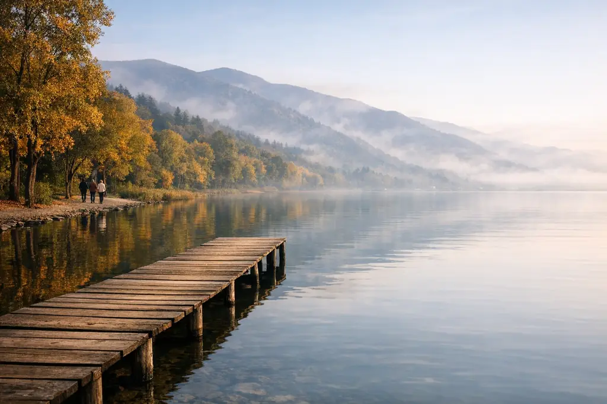

What to visit in Istanbul in 5 days? A planning guide
A practical plan for five days in Istanbul that combines the historic sights, the Bosphorus and a day trip to Bursa or Sapanca, with advice on where to stay and tips that save time and effort.
Private tour with a driver from Istanbul
İzmit (Kocaeli) sits on its gulf east of Istanbul, with Mount Kartepe and its forests above it. A day that brings together Ormanya nature park, the mountain and the waterfront, with a private car from your hotel.
This tour is a good choice if you have already visited Sapanca and want something new in the same area. Ormanya is a large nature park with animals and walking trails, and Kartepe is the closest snow destination to Istanbul.
You can end the day on the İzmit waterfront and at Seka Park, or stop by Maşukiye for lunch beside the streams.
Tour stops
A large nature park in Kartepe, with animals, walking trails and areas for children.
Views over the gulf and Lake Sapanca, skiing in winter, and a cable car when it is operating.
A long promenade along the gulf, with cafés and play areas for children.
Restaurants set over the streams among the forests, on the way back.
How it works
Plus the name of your hotel or area in Istanbul and what you would like to visit, via WhatsApp or the form.
The type of car, the suggested route, and what the price includes and does not include, before any payment.
We send you the driver's details and the departure time from your hotel.
The driver stays with you throughout the tour, and our team is available on WhatsApp for any change.
Book Now
Fill in the form and WhatsApp will open with a ready-made message, and you will receive a written quote before any payment.
Questions & answers
About 100 kilometers to the east; the drive takes an hour to an hour and a half depending on traffic and where your hotel is.
Yes, the two areas are next to each other. We arrange the stops that interest you from both in a single day.
Usually between December and March, and it varies from year to year. We let you know the conditions on the mountain before the trip.
Day Trips
From the OYA guide
A practical plan for five days in Istanbul that combines the historic sights, the Bosphorus and a day trip to Bursa or Sapanca, with advice on where to stay and tips that save time and effort.

A practical guide to the most popular day trips from Istanbul: Sapanca and Maşukiye, Bursa and Uludağ, the Princes' Islands, and Şile and Ağva, with a comparison table and tips for choosing between a day trip and an overnight stay.

Instead of generic numbers that don't fit your trip, we explain the components of travel costs in Turkey and what raises and lowers them, with a simple way to calculate a one-week budget and practical saving tips.
Personal service from start to finish
Tell us your destination, dates and number of travelers, and you will receive a detailed quote shortly — with no obligation.